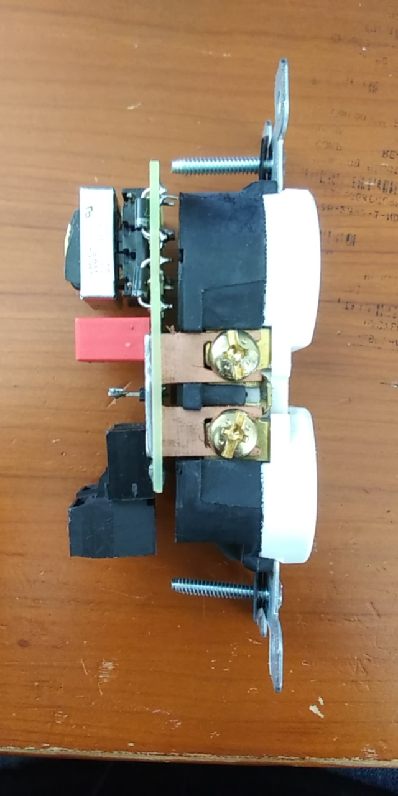

This completely analog PCB attaches to the back of a standard outlet and adjusts the color of an LED mounted in
the switch plate so that you can see how much power the outlet is consuming in real time. I made the PCB
myself with the CNC mills at the University of Washington, and I was in contact with a Chinese manufacturer
of outlets for a while about it until they realized that I was not a real engineer and stopped responding.
